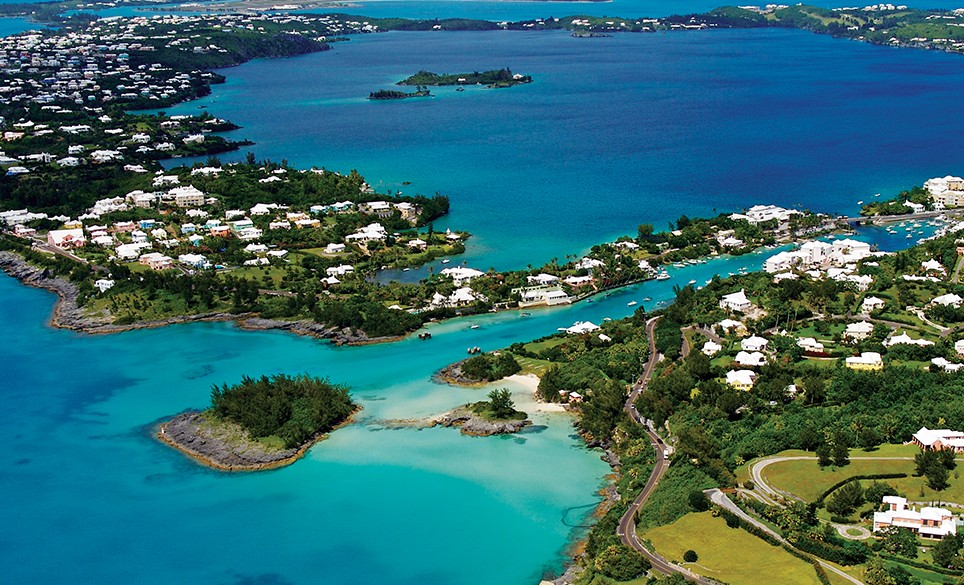

All About Me!
Where I'm From

- I was born in Bermuda in 1998
- My parents, as well as the rest of my family, have been there for many centuries
- I currently work as a lifeguard for the Bermuda Lifeguard Service during the summer
- The island is only about 20.5 square miles, and with a population of about 71,000 people that means we have a population density of 3,465 people per square mile which is the 6th highest in the world!
- And yes, I have been to the Bermuda triangle. Many times in fact; and each time I come back with countless photos of the aliens I saw there.
- We have wild chickens, turtles, and sometimes even manta rays and whales!
My Hobbies
- Rugby
- Football (soccer) Up the Reds!
- Drumming and playing guitar
- Skiing and snowboarding
- Wakeboarding
- And last but certainly not least: reading and writing poems! Click the link on my homepage to see some of my favorites!
Some of My Goals
- To do something meaningful to help save our planet
- To own a bakery in Europe
- To work a stable job that I genuinely love
- To one day go to a Liverpool game at Anfield!